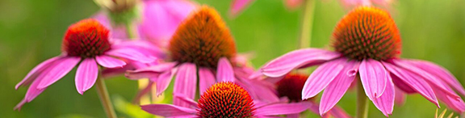

Perennial Definition
Perennials are typically cold-hardy plants that will survive the winter and return again in the spring.
A perennial plant is a plant that lives more than two years. Perennials often require less maintenance than most annual flowers. Once established, they generally require less water and have fewer pest problems than annuals. The list of possible perennial plants and design combinations is endless. See shade perennials and sun perennials. Many new improved varieties are introduced annually that are adapted to the Minnesota climate.
